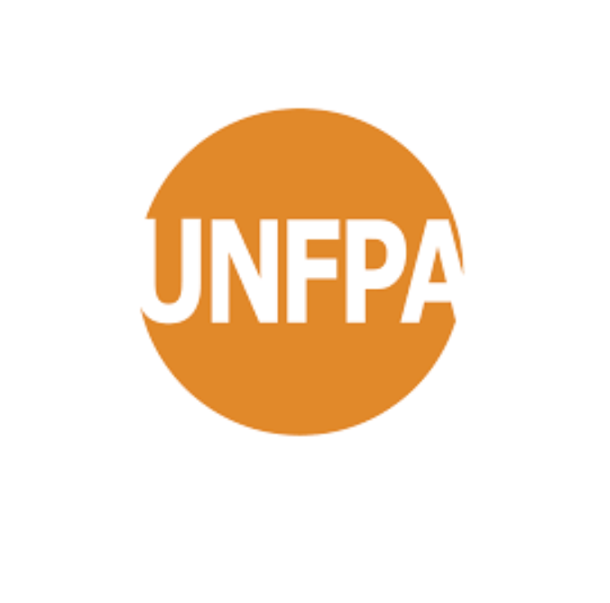
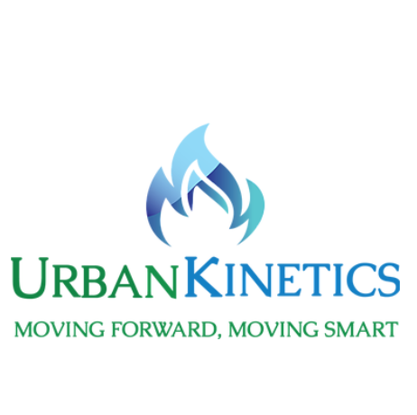
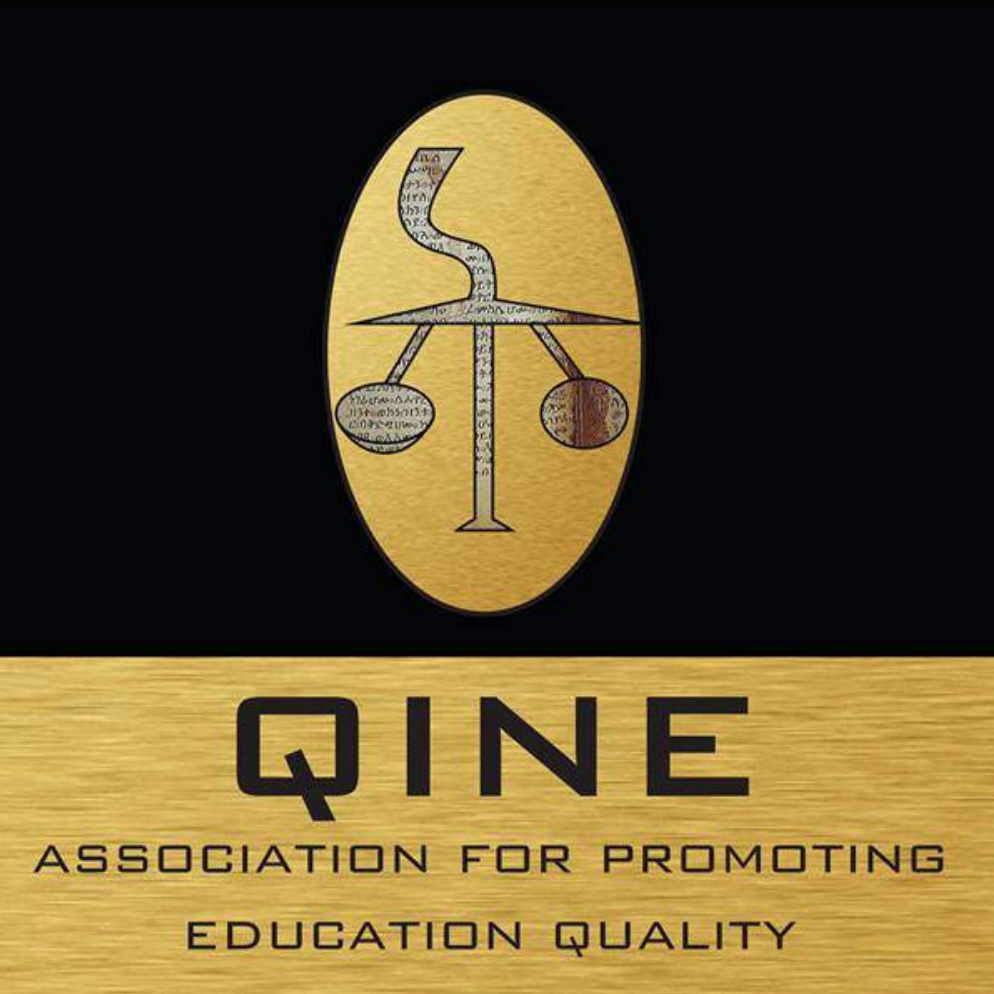

Start Date: 12 September 2016
Duration: 3 months
Responsibilites
- Supporting the creation and maintenance of long-term supply relationships with key external learning content and technology providers
(currently including Google, Oracle, Skillsoft, Mindtools, etc.).
- Supporting the leveraging of learning technologies for our training and other learning
programs.
- Creation and maintenance of UNFPA training websites
- Supporting the management and monitoring of existing training programmes.

Start Date: 20 February 2016
Duration: 3 months
Responsibilites
- research & survey on socio-evnvironmental issues, building action plans, documentation of the work..
- Worked closely with collaborating agency partners, governing bodies and community stake holders to coordinate efforts and resources.
programs.
Start Date: 20 January 2016
Duration: 3 months
Responsibilites
- Assisting on video-based projects including lecture capturing and live event recording.
- Worked closely with Technnology center at the Univeristy and helped them in editing and distributing video using various software programs and hosting platforms

Start Date: 01 January 2016
Duration: 3 months
Responsibilites
- My position was a Judge. I evaluated high school research proposals in Physics aimed at improving the life quality of the Ethiopian community